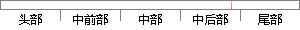

本作品主要利用微信开发者工具以及wxappclub.
片段位置图

相似结果|
相似片段 1：，开发者仍需考虑素材的最终呈现效果，这也是运用创造能力来解决问题的一个过程。第三，形成最终作品开发者使用一定的工具，利用所准备好的素材，按照脚本当中的逻辑顺序以及素材的组织形式，将素材进行集成，最终创作
|
※ 片段修改建议 ※
近似词参考：- 主要：首要 重要
- 利用：操纵 哄骗 使用 行使 应用
- 工具：东西 对象
- 以及：和
系统自动生成语句： 本作品首要操纵微信开发者东西和wxappclub.
注：本片段修改建议为系统自动生成，仅供参考。